bravo’s summer house season 9 reunion was one of the year’s most talked-about reality tv moments. we tapped into the cultural buzz by hosting a live viewing with the cast and using the moment to spotlight milk’s nutritional benefits.
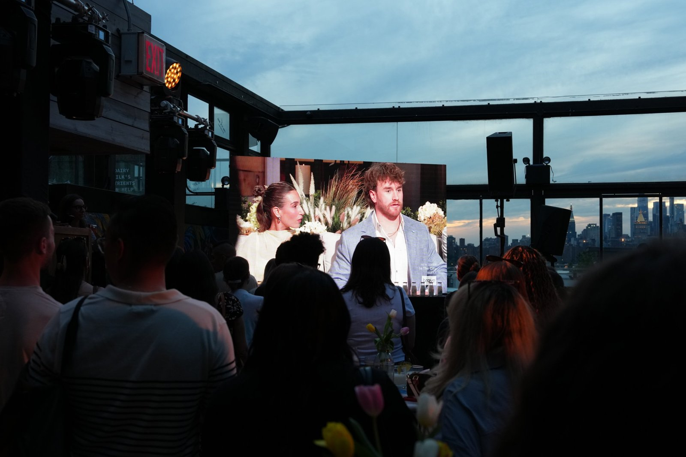
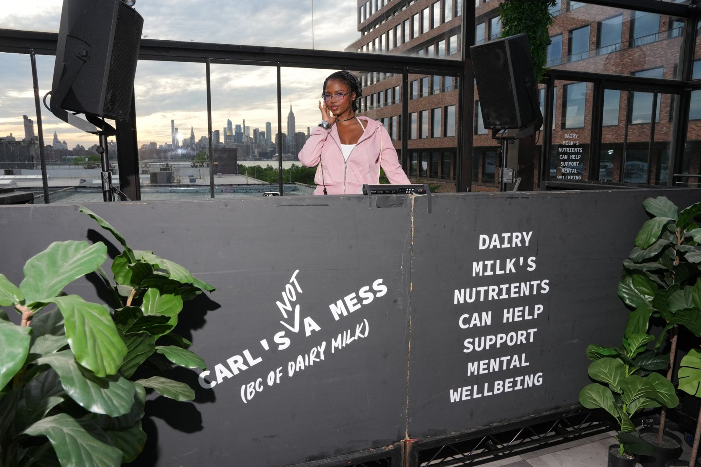
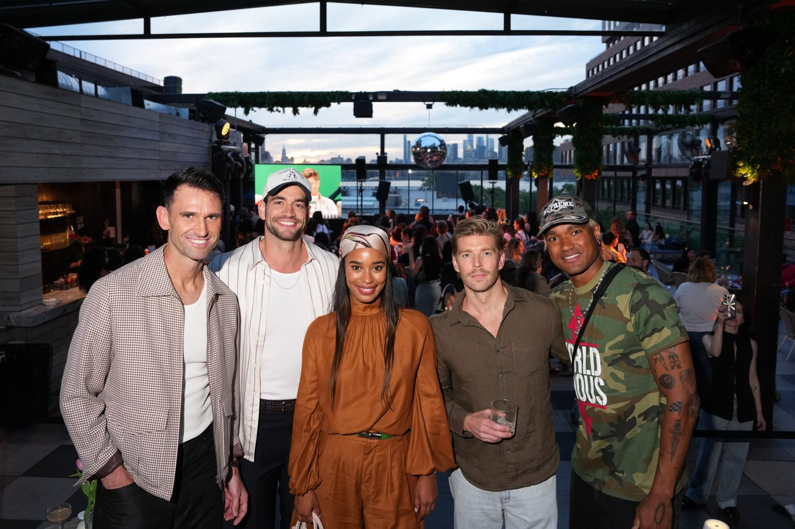
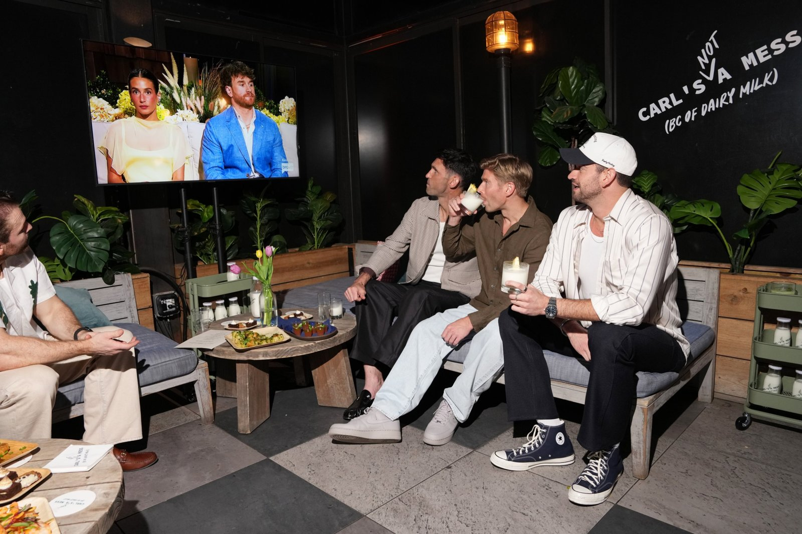
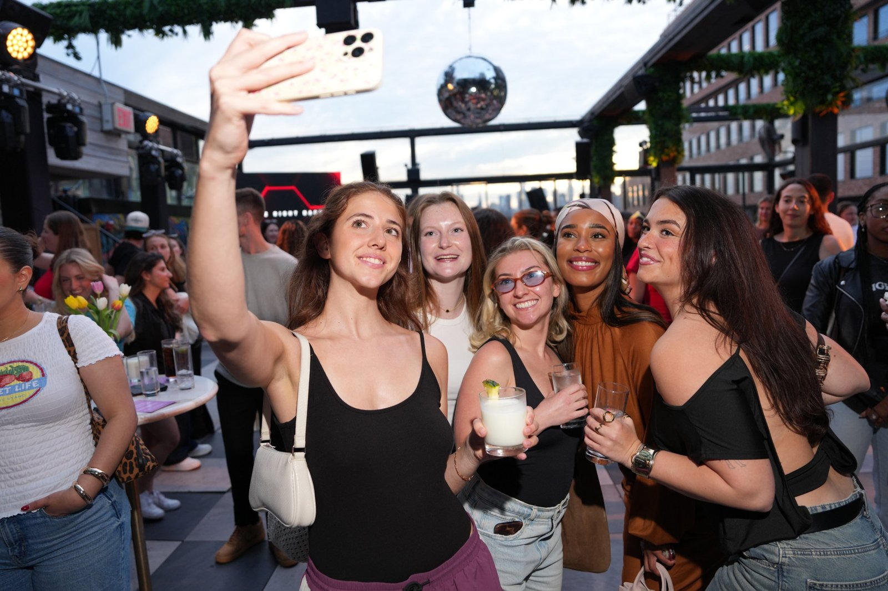
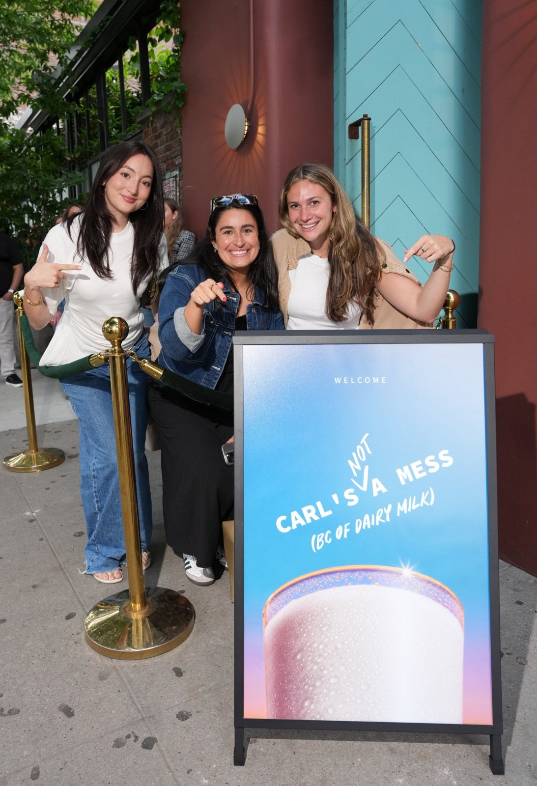
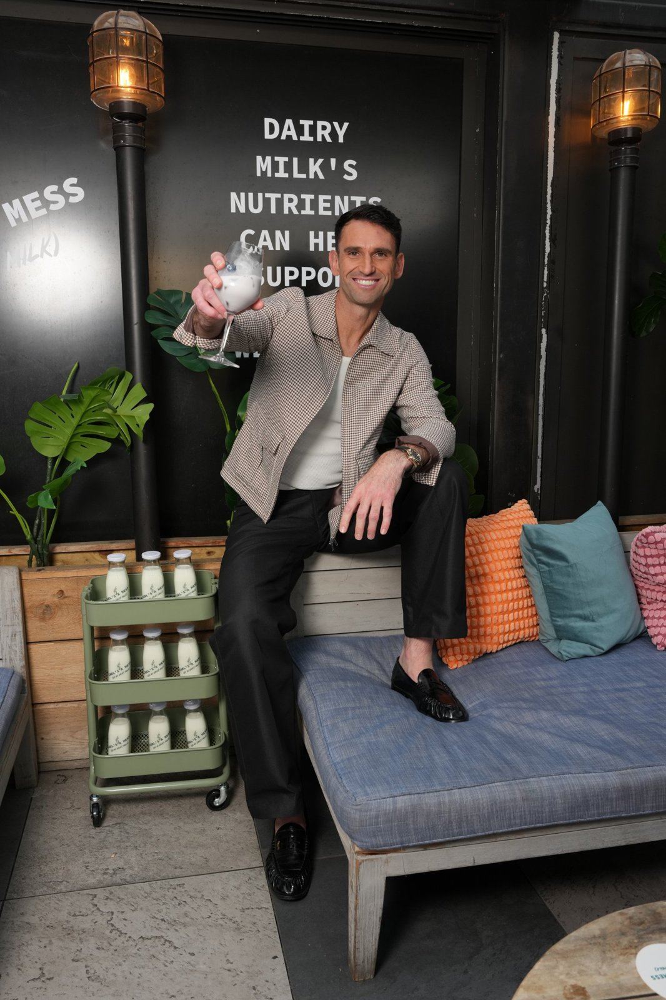
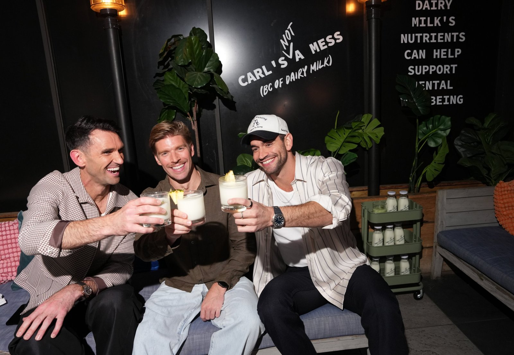
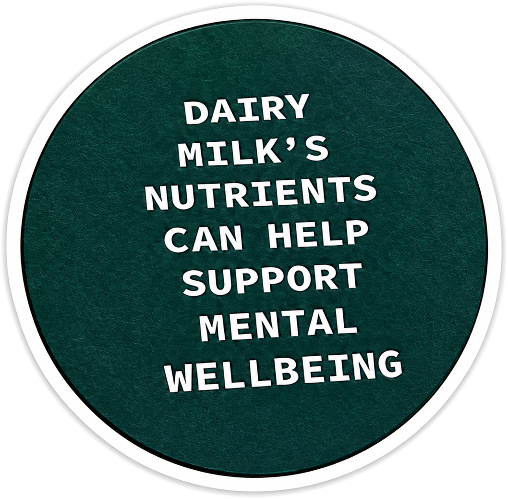
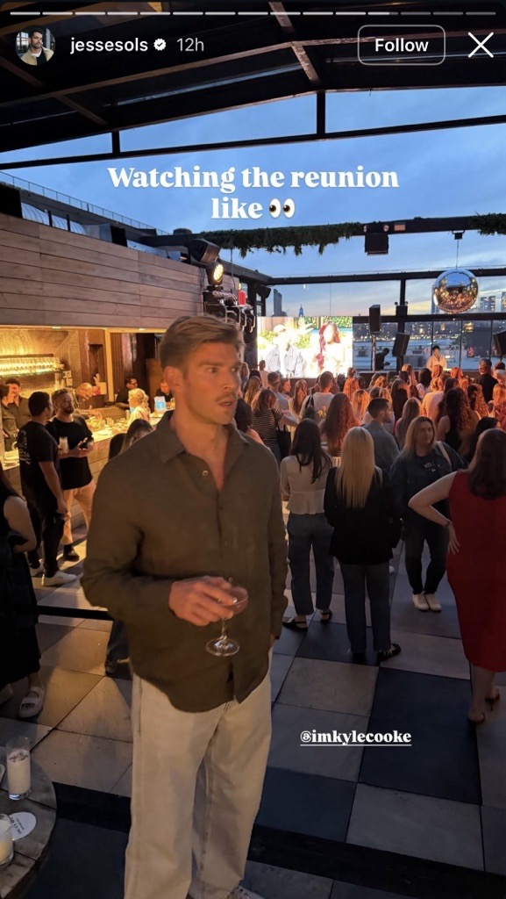
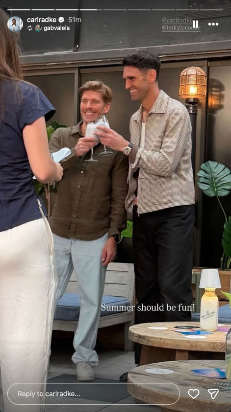
milk stepped into endurance sports with every woman’s marathon, a race created to celebrate and empower women in running. to build community and drive sign-ups, we created rookie route, a raw, unfiltered social series following first-time marathon runners from all walks of life through six months of training.
You’re awesome. I’m 38 and I started running has a hobby this year. Then I started signing up for races and the feeling of getting that medal at the end was such and accomplishment. Running my 1st marathon this weekend in Long Beach then doing Every Women’s Marathon as my 2nd full marathon in November.
may this friendship find me 💗
Goals ........ can’t wait to run my first marathon. Rooting for you girly
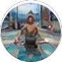
Aaron DeetsNeeded this video today Donna! Thanks for sharing your content 💕
Thanks for the encouraging post! I had a hamstring minor tweak at week 4 which had set me back. I’m going for 15 this Sat🙏👌
wow this is the sweetest!
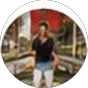
Kat • Life in Japan🗾This made me emotional ❤️
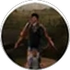
jillybeanrun1212You’ve got this. It’s taper week so just do low key exercises and get lots of rest a couple days before 🥹👏
My soul needed that. Thank you, my heart is FULL!!!
You’re awesome. I’m 38 and I started running has a hobby this year. Then I started signing up for races and the feeling of getting that medal at the end was such and accomplishment. Running my 1st marathon this weekend in Long Beach then doing Every Women’s Marathon as my 2nd full marathon in November.
may this friendship find me 💗
Goals ........ can’t wait to run my first marathon. Rooting for you girly
Needed this video today Donna! Thanks for sharing your content 💕
Thanks for the encouraging post! I had a hamstring minor tweak at week 4 which had set me back. I’m going for 15 this Sat🙏👌
wow this is the sweetest!
This made me emotional ❤️
You’ve got this. It’s taper week so just do low key exercises and get lots of rest a couple days before 🥹👏
My soul needed that. Thank you, my heart is FULL!!!
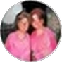
Denise PeraltaThis is a beautiful journey you have with ur best friend! 🥹
Why am I crying?? You’re such an inspiration
Your friendship is so beautiful! Thank you for sharing 💕
Your running journey, alongside a few others, actually inspired me to start my journey last summer!
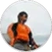
kena_sunshineI love seeing these post. It’s nice seeing relatable ppl during marathon training 😂
Thank you!!! Needed this today!!!! Was in the same boat.
YOU ARE INSPIRING!! I have been in a running rut and wish I had someone to push me but I know I can do it myself because of this ❤️❤️
SO relatable I love this so much!!! Blister baddies unite😂😭✨
This is a beautiful journey you have with ur best friend! 🥹
Why am I crying?? You’re such an inspiration
Your friendship is so beautiful! Thank you for sharing 💕
Your running journey, alongside a few others, actually inspired me to start my journey last summer!
I love seeing these post. It’s nice seeing relatable ppl during marathon training 😂
Thank you!!! Needed this today!!!! Was in the same boat.
YOU ARE INSPIRING!! I have been in a running rut and wish I had someone to push me but I know I can do it myself because of this ❤️❤️
SO relatable I love this so much!!! Blister baddies unite😂😭✨